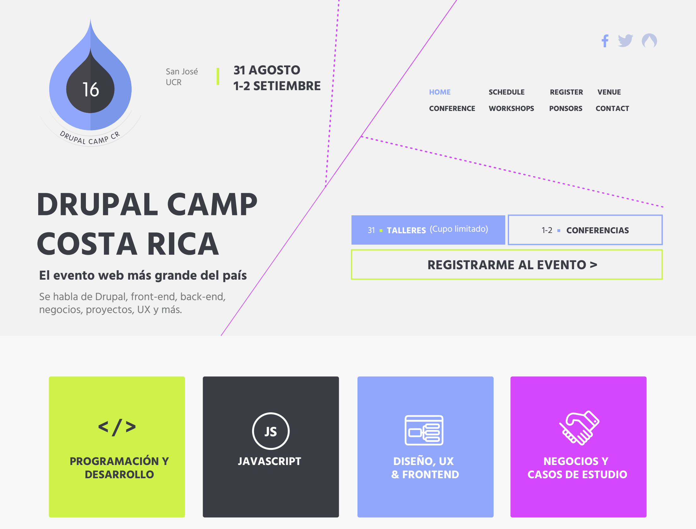
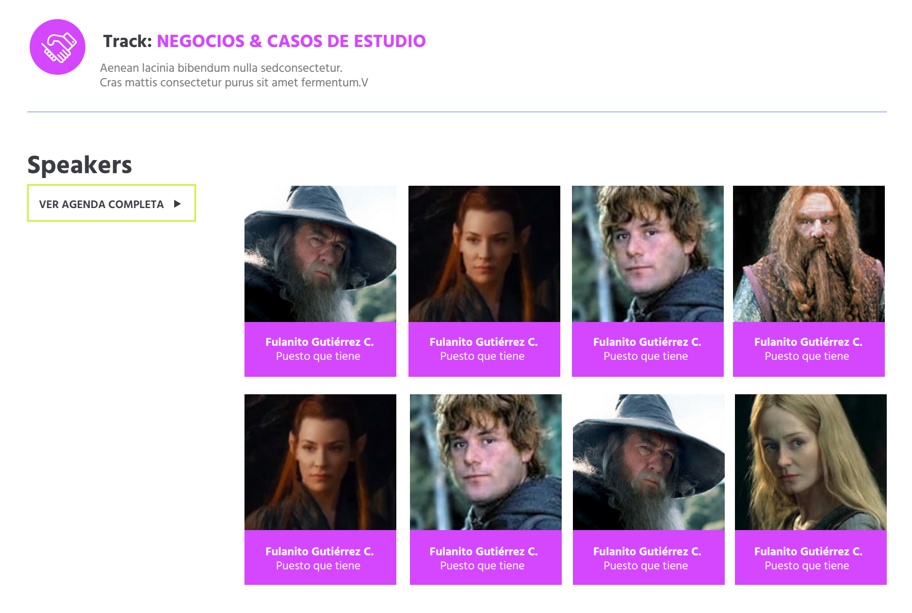

DrupalCamp Costa Rica
Every year in the last 5 years, the Drupal Community in Costa Rica helds what we call a DrupalCamp, this is a 3 day event of 300/400 attendees willing to learn about Drupal and how to create, design and develop a Drupal project.

On this year DrupalCamp we set two main goals:
- broaden the audience from developers to web in general (designers, developers, PM, business, etc.)
- attract more women to the event.
What I did
We had to understand the fact that eventhough with all the power of visual design to actually accomplish these goals we were short. We needed to change the way we approach the content.
Before we interpreted the name of the Talk as the most important reason people will go to the event, but as last year demonstrated (interviews), people were more willing to go to the event if they actually learned more about the speakers and understand why his or her talk was valuable.
So this year we are focusing on our speakers, this way our audience can decide if they want to go to the event or not, but also by focusing on our speakers we gain a bigger commitment with our speakers (in previous events, some of the speakers would just not show up, or would change the talk subject at the end).

If we want to have more diversity in the event, we also need to show diversity, that's why we've been looking for women in tech that are really good at what they are doing and are willing to give a talk at the Camp.
Wrapping all this, we end up with a Strategy aimed to meet our goals while also improving how we handle the problems we had with the speakers and also helping us promote the event better over social media and our newsletter.
Key tools and deliverables
- Interviews
- Stakeholder Interviews
- Strategy
- Prototype
Results
Being also the Communication Director of DrupalCamp Costa Rica, I had the support and trust of the other Directors. We switched from focusing mainly on creating the website and logistics of the event, to focusing on the attendees and the content they will experience at the event, this was a major shift for our values and approach to the whole Camp.
At the moment, this website and event is still under development and will be out soon.